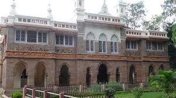

Bapu Museum
Bapu Museum, also known as Victoria Jubilee Museum, is a museum located in Vijayawada, Andhra Pradesh, India. It houses a rich collection of artifacts, sculptures, paintings, and historical relics from various periods.
Location: M.G. Road, Vijayawada, Andhra Pradesh, India
Collection: Includes sculptures, paintings, textiles, manuscripts, and more.
Highlights: Features artifacts from ancient times, including Buddha's relics, and exhibits from the medieval and modern periods.